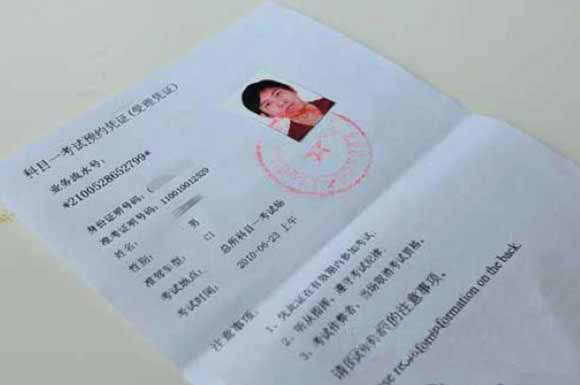
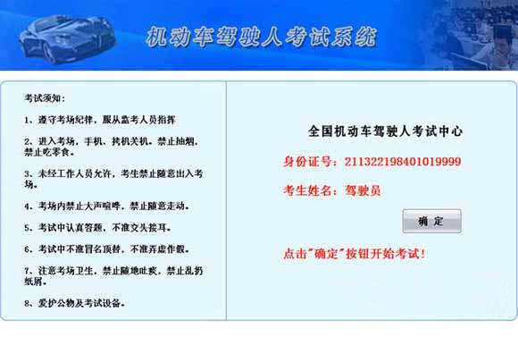
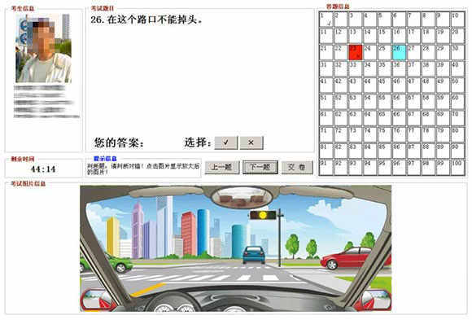

科目一，又称驾驶员理论考试，是机动车驾驶证考核的第一部分。
了解机动车基本知识，掌握道路交通安全法律、法规及道路交通信号的规定。
总共12个学时。按照规定，必须签够12个学时（每天最多只可签4个学时），学时提交审核后，方可预约科目一考试。在具体实施中，各个地区略有差异。
考试主要考核道路交通安全法律法规、交通信号、通行规则等最基本的知识。由考生通过计算机闭卷答题，时间为45分钟，试题100道题，题目由计算机考试系统从考试题库中随机抽取生成，题型为判断题和单选题，满分100分，90分合格。不合格可以当场补考一次，如仍旧不合格，只能再次预约考试时间（科目一没有补考次数限制）。 科目一考试合格后，车管所应当在三日内核发《驾驶技能准考证明》，有效期为三年，学员要在有效期内完成科目二和科目三考试。
1驾校统一安排学员领取科目一考试受理凭证，学员要认真核对受理凭证上的基本信息（如姓名、身份证号、照片、准驾车型）是否与本人相符，无误后按受理凭证上的考试时间和考试地点，到车管所考场参加考试。

2到车管所后，持本人有效身份证原件、考试受理凭证和学员候考证在科目一考试室外排队依次进入考场。
3进入考场时，先将身份证原件及受理凭证交给考官登录确认，按计算机安排的座位号入座。入座后输入本人考试受理凭证流水号，按“确定”显示本人资料无误后再按“进入”开始考试。[图片仅供参考，各个地区略有差异]

4在考试过程中，做完上一道题再点击下一道题（考试过程中选择确认答案后就提示对错，考一题过一题不能重选答案，错1题扣1分）。跳题按“选题”输入所需到达的题号，按“确定”后跳到要到达的题目。结束考试按“交卷”并再次根据屏幕中央的提示，按“结束考试”，看见分数后按“返回”退出考试。[图片仅供参考，各个地区略有差异]

5考试共计100道题，时间为45分钟，90分合格。成绩不合格，可以当场补考一次，学员需重新输入证件种类信息，核对姓名报考车型等无误后，开始补考。
6考试期间监控系统将全程录像并随机拍摄考试者照片，学员不能左顾右盼或用手遮挡面部，如考试期间需要帮助，需举手向考场工作人员咨询，不能随意离开座位，如违反上述要求，将取消学员该次的考试成绩。
7考试结束，学员到“出口”处凭“考试受理凭证”打印考试成绩表及《驾驶技能准考证明》，确认姓名、身份证号和现场的抓拍照片是自己后，在《机动车驾驶人考试成绩表》科目一考试“被考人签名”栏签名，填写“考试当天的时间”，离开考场后将《驾驶技能准考证明》和成绩表交给驾校领队，切勿遗失。
8参加考试一定要携带本人有效身份证原件和考试受理凭证，考试时自觉遵守考场纪律和维护考场秩序，严禁将考试书籍和个人随身携带的物品（包括手机、手提包）带入考场，禁止任何形式的作弊行为，保持肃静。否则，被车管所注销成绩或学籍，后果严重。